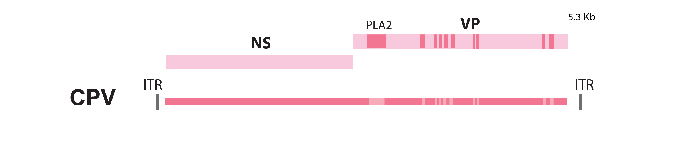
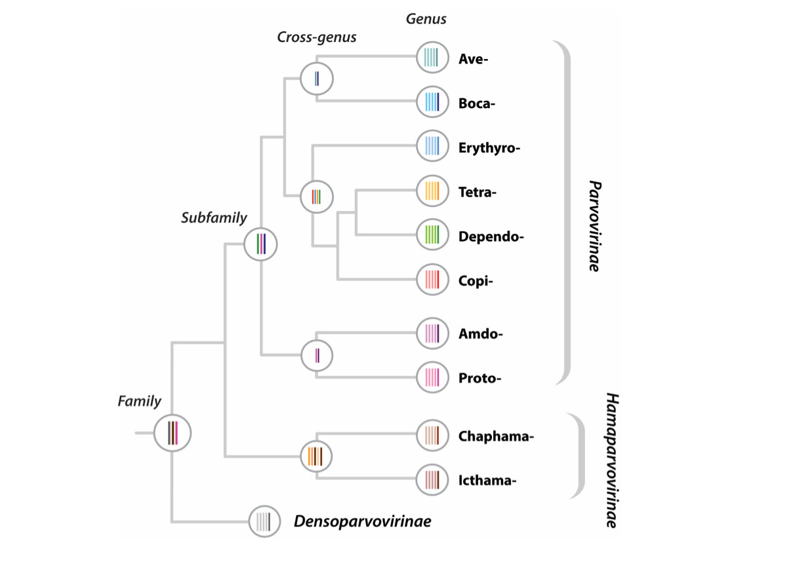

Virus data included in Parvovirus-GLUE
This page provides background information on the virus-associated data items included in the project - information about endogenous parvoviral elements (EPVs) can be found here.
Parvovirus genome features
Parvoviruses have linear, single-stranded DNA genomes ~5 kilobases (kb) in length. They are typically very compact and generally exhibit the same basic genetic organisation comprising two major gene cassettes, one (Rep/NS) that encodes the non-structural proteins, and another (Cap/VP) that encodes the structural coat proteins of the virion.

A schematic representation of the canine parvovirus (CPV) genome. NS=non-structural; VP=capsid; PLA2=phospholipase A2; ITR=inverted terminal repeat; Kb=kilobases
Some species and genera encode additional polypeptide gene products adjacent to these genes or overlapping them in alternative reading frames.
The genome is flanked at the 3' and 5' ends by palindromic inverted terminal repeat (ITR) sequences that are the only cis elements required for replication.
Parvovirus-GLUE defines a standard set of genome features for parvoviruses and records the locations of these genome features on master reference sequences (see below).
Sequences and sequence-associated data
The sequence data in this project are organised into multiple distinct sources. Each source contains data in either GenBank XML or plain FASTA format. The type of data is indicated by the name of the source (all GenBank XML sources contain 'ncbi' in the name).
The following NCBI-derived sources are included in the project:
- ncbi-refseqs: Core project master reference sequences (one per parvovirus genus)
- ncbi-refseqs-amdo: Amdoparvovirus
- ncbi-refseqs-proto: Protoparvovirus
- ncbi-refseqs-boca: Bocaparvovirus
- ncbi-refseqs-ave: Aveparvovirus
- ncbi-refseqs-tetra: Tetraparvovirus
- ncbi-refseqs-copi: Copiparvovirus
- ncbi-refseqs-erythro: Erythroparvovirus
- ncbi-refseqs-dependo: Dependoparvovirus
GenBank XML files are imported into this project directly from NCBI GenBank using an appropriately configured version of GLUE's 'GenBankPopulator' module and are uniquely identified within this project by their GenBank accession numbers.
Sequences included in this project are linked to auxiliary data in tabular format, as follows:
| Parameter | Type | Definition |
|---|---|---|
| full_name | VARCHAR | Full name of the virus this sequence is derived from |
| name | VARCHAR | Abbreviated name of the virus this sequence is derived from |
| subfamily | VARCHAR | Taxonomy - virus subfamily |
| supergenus | VARCHAR | Taxonomy - virus supergenus (proposed) |
| genus | VARCHAR | Taxonomy - virus genus |
| clade | VARCHAR | Taxonomy - virus clade |
| isolate_name | VARCHAR | Name of the isolate this sequence is derived from |
| isolation_host | VARCHAR | Species (latin binomial) virus was isolated from |
| length | INTEGER | Length of the sequence |
| pubmed_id | INTEGER | PubMed ID of manuscript associated with sequence |
| gb_create_date | GenBank | GenBank creation date of the sequence |
| gb_update_date | VARCHAR | Date of most recent GenBank update |
| country | VARCHAR | Country where virus was isolated |
| place_sampled | VARCHAR | Location of sampling (state, region, or city) |
| collection_year | INTEGER | Year virus was isolated |
| collection_month | VARCHAR | Month virus was isolated |
| collection_month_day | VARCHAR | Day of month virus was isolated |
Parvovirus reference sequences
For all offially recognised parvoviral genera, we defined a 'master' reference sequence, as follows:
Parvovirinae
- Protoparvovirus: Carnivore protoparvovirus 1 (NC_001539)
- Aveparvovirus: Chicken parvovirus (NC_024452)
- Amdoparvovirus: Carnivore amdoparvovirus 1 (NC_001662)
- Erythroparvovirus: Human parvovirus B19 (NC_000883)
- Dependoparvovirus: Adeno-associated virus 2 (NC_001401)
- Copiparvovirus: Bovine parvovirus 2 (NC_006259) Bovine parvovirus 2
- Bocaparvovirus: Bovine parvovirus (NC_001540)
- Tetraparvovirus: Human parvovirus 4 (NC_007018)
- Artiparvovirus: Artibeus jamaicensis parvovirus 1 (NC_016752)
Hamaparvovirinae
- Chaphamaparvovirus: Porcine parvovirus 7 (NC_040562)
- Ichthamaparvovirus: Syngnathus scovelli chapparvovirus (MN049932)
- Brevidensoparvovirus: Aedes albopictus densovirus 2 (NC_004285)
- Penstyldensoparvovirus: Infectious hypodermal and hematopoietic necrosis virus (NC_002190)
Densoparvovirinae
- Ambidensovirus: Junonia coenia densovirus (NC_004284)
- Aquambidensovirus: Asteroid aquambidensovirus 1 (NC_038532)
- Blattambidensovirus: Blattodean blattambidensovirus 1 (NC_005041)
- Diciambidensovirus: Hemipteran diciambidensovirus 1 (NC_030296)
- Hemiambidensovirus: Dysaphis plantaginea densovirus (NC_034532)
- Iteradensoparvovirus: Lepidopteran iteradensovirus 1 (NC_003346)
- Miniambidensovirus: Orthopteran miniambidensovirus 1 (NC_022564)
- Muscambidensovirus: Haematobia irritans densovirus (MK643151)
- Pefuambidensovirus: Blattodean pefuambidensovirus 1 (NC_000936)
- Protoambidensovirus: Dipteran protoambidensovirus 1 (MK722617)
- Scindoambidensovirus: Hemipteran scindoambidensovirus 1 (NC_004289)
We explicitly defined the locations of genome features on master reference sequences (see here).
Multiple sequence alignments (MSAs)
Multiple sequence alignments (MSAs) are the basic currency of comparative genomic analysis. MSAs constructed in this study are linked together using GLUE's constrained MSA tree data structure.
A 'constrained MSA' is an alignment in which the coordinate space is defined by a selected reference sequence. Where alignment members contain insertions relative to the reference sequence, the inserted sequences are recorded and stored (i.e. sequence data is never deleted).
GLUE projects have the option of using a data structure called an alignment tree to link constrained MSAs representing different taxonomic levels, and we've used this approach in Parvovirus-GLUE.

The phylogenetic tree shown above, taken from a report by Pénzes et al. (2020), shows the evolutionary relationships between currently recognised genera in the family Parvoviridae.

The schematic figure above shows the 'alignment tree' data structure currently implemented in Parvovirus-GLUE. For the highest taxonomic levels (i.e. at the root) we aligned only the most conserved regions of the genome, whereas for the lower taxonomic levels (i.e. within and below genus level) we aligned complete coding sequences. We used an alignment tree data structure to link these alignments, via a set of common reference sequences. The root alignment contains reference sequences for major clades, whereas all children of the root inherit at least one reference from their immediate parent. Thus, all alignments are linked to one another via our chosen set of master reference sequences.
Alignments imported into in the project include:
- A ‘root’ alignment constructed to represent homology between the two largest subgroupings in the Parvoviridae.
- ‘subfamily’ alignments constructed to represent proposed homologies between representative members of Parvoviridae subfamilies
- ‘cross-genus’ alignments constructed to represent proposed homologies between representative members of 'minor' Parvoviridae lineages
- ‘genus-level’ alignments constructed to represent proposed homologies between the genomes of representative members of specific parvovirus genera.
Phylogenetic trees
We used GLUE to implement an automated process for deriving midpoint rooted, annotated trees from the alignments included in our project.
Trees were constructed at distinct taxonomic levels:
- Family-level (root) phylogeny (Rep)
- Genus-level phylogenies